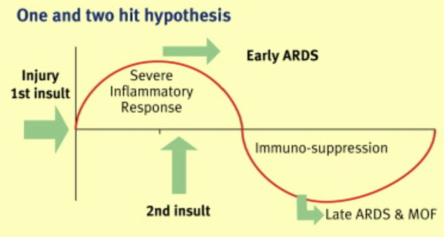
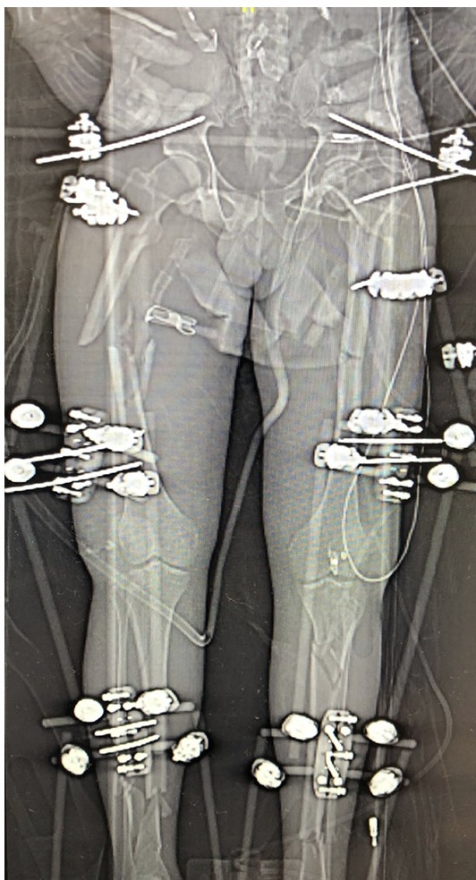
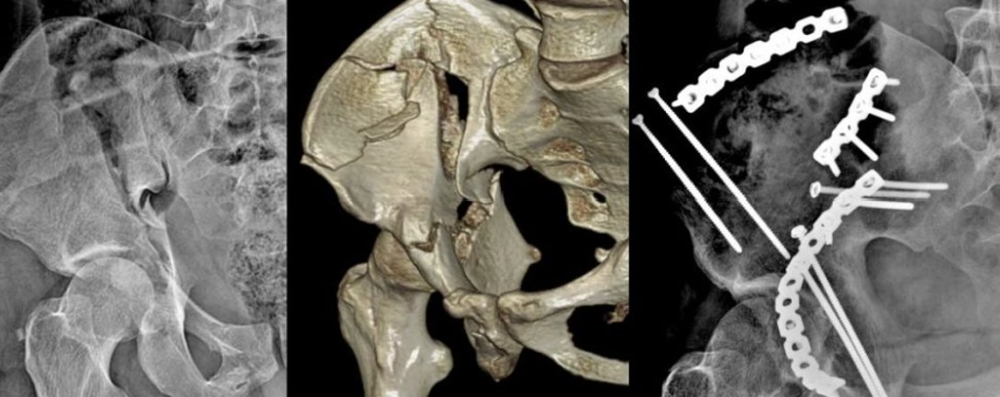
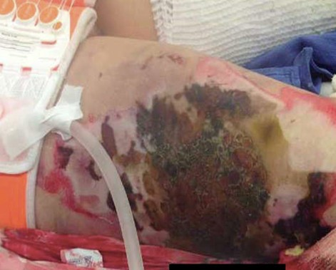
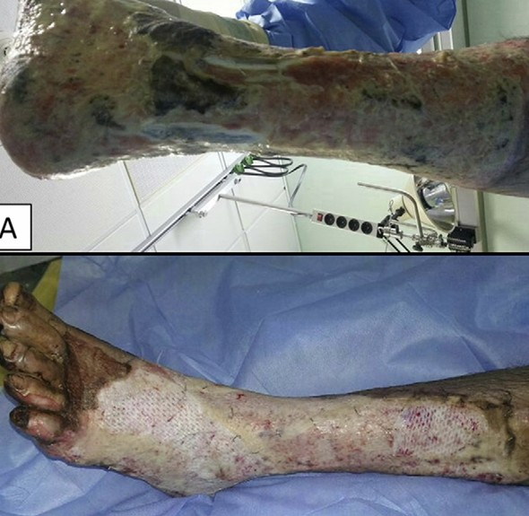

Servicio de Traumatología y Ortopedía · Sesión académica basada en el Core Curriculum OTA y el protocolo ATLS® 10.ª edición.
Hospital Christus Muguerza Alta Especialidad.
Discriminar de forma inmediata el shock hemorrágico del neurogénico, obstructivo y cardiogénico.
| Parámetro | Clase I | Clase II | Clase III | Clase IV |
|---|---|---|---|---|
| Pérdida de sangre | < 15% | 15–30% | 30–40% | > 40% |
| Frecuencia cardiaca | Normal | > 100 lpm | > 120 lpm | > 140 lpm |
| Presión arterial | Normal | Normal | Disminuida | Disminuida |
| pH sistémico | Normal | Normal | Disminuido | Disminuido |
| Estado mental | Ansioso | Confundido | Letárgico | Letargo / Coma |
| Tratamiento inicial | Cristaloides | Cristaloides | Líquidos + Sangre | Líquidos + Sangre |
Restaurar la perfusión microvascular y oxigenación tisular limitando el bolo inicial a 1 litro en adultos.
| Variable | Clase 1 | Clase 2 | Clase 3 | Clase 4 |
|---|---|---|---|---|
| Pérdida de sangre (mL) | Hasta 750 | 750–1500 | 1500–2000 | > 2000 |
| Frecuencia cardiaca | < 100 | 100–120 | 120–140 | > 140 |
| Presión arterial | Normal | Normal | Disminuida | Disminuida |
| Presión de pulso | Normal | Disminuida | Disminuida | Disminuida |
| Frecuencia respiratoria | 14–20 | 20–30 | 30–40 | > 35 |
| Gasto urinario (mL/h) | > 30 | 20–30 | 5–15 | Despreciable |
AIS: clasifica el daño por regiones del 1 (leve) al 6 (incompatible con la vida).
ISS = AIS₁² + AIS₂² + AIS₃²
NISS = AIS²ₘₐₓ₁ + AIS²ₘₐₓ₂ + AIS²ₘₐₓ₃
Amplificación aguda del SIRS por una segunda agresión (cirugía prolongada) sobre un organismo ya sensibilizado.



Ventana inmunológica segura: día 6–8, evitando la ventana de peligro hiperinflamatoria de los días 2–5.

